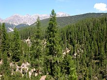
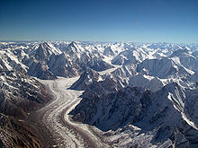

Heading
Post 1

A desert is a barren area of land where little precipitation occurs and consequently living conditions are hostile for plant and animal life. The lack of vegetation exposes the unprotected surface of the ground to the processes of denudation. About one third of the land surface of the world is arid or semi-arid. This includes much of the polar regions where little precipitation occurs and which are sometimes called polar deserts or "cold deserts". Deserts can be classified by the amount of precipitation that falls, by the temperature that prevails, by the causes of desertification or by their geographical location
Post 2
An island or isle is any piece of sub-continental land that is surrounded by water.Very small islands such as emergent land features on atolls can be called islets, skerries, cays or keys. An island in a river or a lake island may be called an eyot or ait, and a small island off the coast may be called a holm. A grouping of geographically or geologically related islands is called an archipelago, e.g. the Philippines.
Post 3

A forest is a large area dominated by trees.Hundreds of more precise definitions of forest are used throughout the world, incorporating factors such as tree density, tree height, land use, legal standing and ecological function.According to the widely usedFood and Agriculture Organization definition, forests covered four billion hectares (15 million square miles) or approximately 30 percent of the world's land area in 2006
Post 4

A glacier is a persistent body of dense ice that is constantly moving under its own weight; it forms where the accumulation of snow exceeds its ablation (melting and sublimation) over many years, often centuries. Glaciers slowly deform and flow due to stresses induced by their weight, creating crevasses, seracs, and other distinguishing features. They also abrade rock and debris from their substrate to create landforms such as cirques and moraines. Glaciers form only on land and are distinct from the much thinner sea ice and lake ice that form on the surface of bodies of water